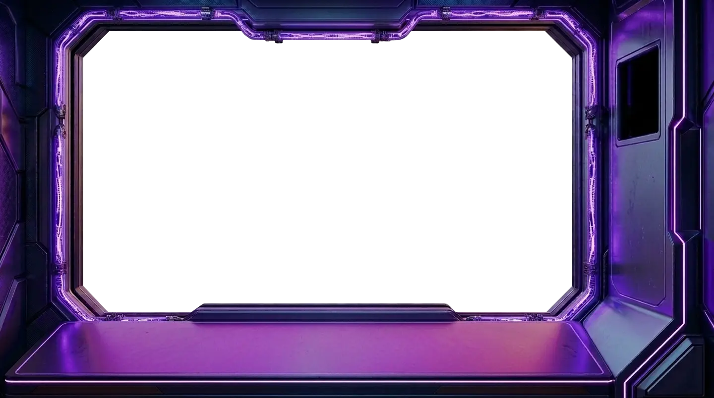
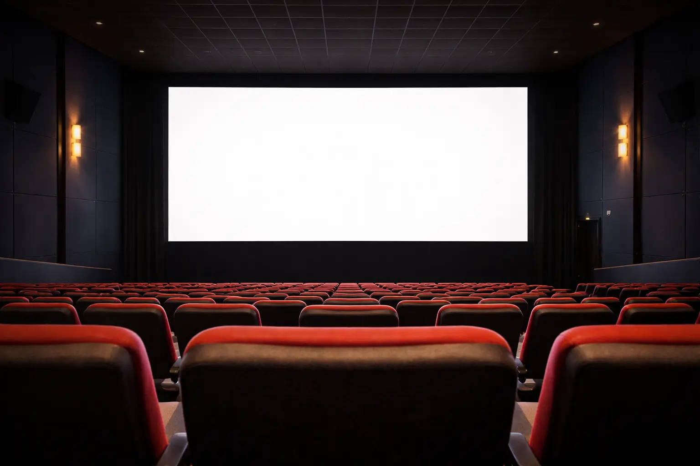
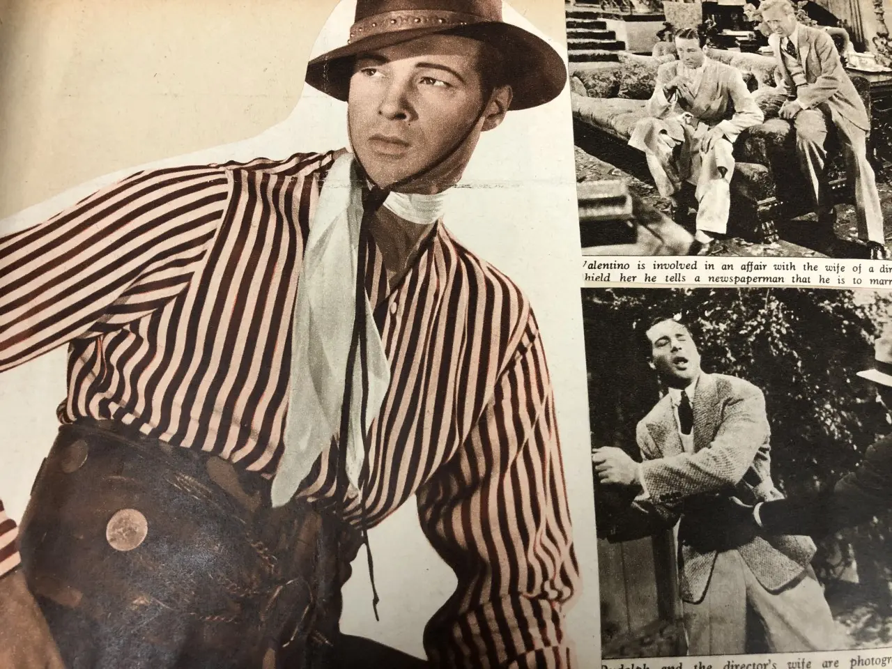

The Christopher Roby Archive of Film Texts (1919-2004)
| Reference number | CRAFT |
|---|---|
| Level of description | Collection |
| Date(s) | 1919–2004 |
| Format | Volumes, files, newspaper, photographs and printed documents |
| Condition | Fair |
| Administrative history |
Much of this collection was originally brought together by the
members of the Southport Film Guild (SFG) in the early 1970s
and, subsequently, formalised and added to as the basis of the
Contemporary Cinema Archive (CCA), set up by members of the
SFG in Southport and managed by Christopher Roby (an SFG
member) from 1974 until sometime in the late 1970s.
The collection has had some additions since then, some while it was being looked after by Christopher Roby himself and some from cinema related collections donated by Edge Hill staff. |
Description
This collection has its roots in the work of the Contemporary Cinema Archive (CCA, founded 1974 in Southport) and the Southport Film Guild (founded 1966). The CCA was managed by Chris Roby and, particularly in its early days, often referred to as the Southport Film Guild archive.
The idea for the CCA came from conversations between members of the Southport Film Guild, including Roby, who decided they could bring together their own personal collections of film memorabilia, magazines and books to form a publicly accessible archive. Prior to becoming archive director of the CCA, Roby had a career in engineering. He was an active member of the Southport Film Guild and contributed articles about cinema and film reviews to the local media.
In 1975, the CCA received a grant from the Merseyside Arts Association and Sefton Library and Arts Services provided a home at Wennington Road Library, Blowick, Southport and then soon after moved them to Victoria Buildings, Lord Street, Southport. Among other things, funding was used to purchase newspapers and magazines so that a contemporary collection of film related clippings could be maintained and preserved for the future - it is these clippings that remain a significant part of this collection under CRAFT/CLIP.
Initially a volunteer-led project, in 1976, and again in 1977, the Manpower Services Commission provided the wages for six people at the CCA as part of a government job creation scheme, and this supported the expansion of the CCA's collecting, cataloguing and filing activity; as well as local engagement work with schools, community groups and so on. Granada Television also supplied an annual grant (for three years) to support the CCA's expansion of activities in 1975-6.
As well as donations from members of the Southport Film Guild, newspaper clippings reveal that some items were donated by local residents, although it is not always clear exactly which items these were and whether they are still part of this collection. At its peak, the CCA's collection also included artefacts such as vintage film projectors, stereoscopes and magic lantern slides, although many of these may have only been on loan to the CCA and returned to their original owners at some point.

Following the closure of the CCA at some point in the late 1970s, the collection would be looked after by Roby himself, before being stored by the North West Film Archive (a part of Manchester Metropolitan University). In 2002, having seen stories in the local press about the establishment of Film Studies courses at Edge Hill, Chris Roby requested for the entire collection to be transferred to Edge Hill where, by 2003, the collection was available for research. A two day conference, Archiving the Cinema, was held in April 2003 to celebrate the collection in the context of wider cinema archives.
Work is ongoing to catalogue this collection in full. This means that the current published catalogue may not reflect the contents of the entire collection. Please contact the archive if you would like more information.
Content Warning: As historical resources, the nature of the items and the catalogue descriptions in this collection reflect the language and thinking of the era in which they was created, and some items include language and imagery which is offensive, oppressive and may cause upset. These ideas are not condoned by Edge Hill University, but we are committed to providing access to this material as evidence of the inequalities and attitudes of the time period.